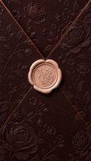
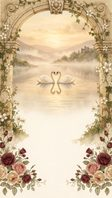
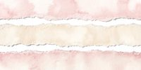
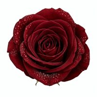
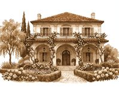
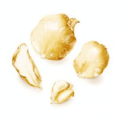

Storyboard de la invitación web: de la apertura del sobre lacrado hasta el cierre. Cada viñeta indica qué se ve, qué se mueve, cuánto dura y el texto real.
Imágenes provisionales. Las viñetas son miniaturas de baja resolución generadas con Canva. Las fotos de los novios son imágenes de IA de personas ficticias, y por eso se ven borrosas. Sirven para aprobar composición y estilo. Las versiones completas no se pueden descargar desde este entorno todavía. La imagen social 1200×630 se genera en la fase 3.
Novios
Valentina y Sebastián · monograma V&S
Tratamiento
"ustedes" TODO confirmar
Fecha y hora
sábado 22.05.27, 17:00 (America/Santo_Domingo) TODO inventada
Lugar
Jardín Casa Hermosa, Calle Las Palmas 12, Santo Domingo TODO ficticio
Confirmar antes del
22.04.27, modo demostración sin destino TODO
Música
ninguna por ahora TODO

sobre-cerrado
Escena 1 · Pantalla inicial
El sobre cerrado
Se ve
Sobre a pantalla completa (100svh), sin scroll. Sello rosa empolvado con "V&S".
Se mueve
El sello pulsa muy suave. Botón "Saltar" discreto arriba.
Duración
Hasta que la persona toca el sello.
Texto
Toca el sello para abrir
0,0 s8,0 s
Escena 2 · Video del sobre
La apertura
Se ve
Cámara fija. Un brillo recorre el sello, las flores se encienden en cobre, la solapa pasa de vino a rosa y se abre en V. Estalla un núcleo de luz y las flores reaparecen como líneas doradas.
Se mueve
Video de 8 s sin audio. Empieza en el mismo gesto que arranca la música (si hay). A 0,8 s del final se funde a la portada.
Duración
8 s
Texto
Ninguno
Si falla
Si el video no arranca en 4 s: fundido del sobre cerrado al abierto.

portada
Escena 3 · Portada
El arco y los cisnes
Se ve
Arco de piedra con lago brumoso y cisnes. El centro, claro, lleva los textos en granate.
Se mueve
Los textos entran escalonados tras el fundido. Pétalos flotan lentos (15–25). La flecha oscila.
La guirnalda cuelga sobre el papel rosa y, debajo del texto, aparece la foto de la pareja con borde de papel rasgado. Todo es una sola hoja continua, sin tarjetas.
Se mueve
Parallax leve de la guirnalda. El texto aparece con opacidad y 20 px de desplazamiento, en cascada.
Duración
Ligada al scroll.
Texto
Valentina & Sebastián los invitan a celebrar con ellos este día tan especial

papel-rasgado
Escena 5 · Cuenta atrás
La celebración comienza en
Se ve
Un borde de papel rasgado separa la sección. Cuatro bloques: Días, Horas, Minutos, Segundos, con cifras de ancho fijo.
Se mueve
Cada dígito sale hacia arriba y entra desde abajo con ligero desenfoque (menos de 300 ms). Se calcula contra el 22.05.27 a las 17:00, hora de Santo Domingo.
Duración
Continua.
Texto
La celebración comienza en · Días · Horas · Minutos · Segundos. A cero: ¡Hoy es el gran día!

rosa
Escena 6 · Programa
Programa del día
Se ve
Línea vertical fina con un rombo por acto: hora a la izquierda, acto a la derecha.
Se mueve
La rosa baja por la línea ligada al scroll, del primer al último rombo, con una rotación leve.
Duración
Ligada al scroll.
Texto
16:30 Llegada de invitados · 17:00 Ceremonia · 18:00 Brindis · 19:00 Cena · 21:00 Baile TODO inventado

lugar

petalos
Escena 7 · Ubicación
Dónde será
Se ve
Nombre del lugar, fecha, hora y dirección. Pétalos dorados a los lados, sin tapar texto.
Se mueve
Los pétalos se balancean con parallax. La ilustración sube desde abajo al hacer scroll.
Duración
Ligada al scroll.
Texto
Ubicación · Jardín Casa Hermosa · sábado 22 de mayo de 2027, 17:00 · Calle Las Palmas 12, Santo Domingo · Cómo llegar TODO ficticio
foto-novios-2
Escena 8 · Nuestra historia
La foto de la pareja
Se ve
Foto a ancho completo entre dos bordes de papel rasgado, al final de la ubicación.
Se mueve
Aparece desde abajo con un leve zoom al hacer scroll.
Duración
Ligada al scroll.
Texto
Nuestra historia
Escena 9 · Confirmación y cierre
Confirmar asistencia y despedida
Se ve
Formulario sobre la misma hoja: nombre, asistencia, acompañantes, alergias y mensaje. Botón para añadir al calendario (.ics). Cierre con el monograma V&S.
Se mueve
Estados de envío, éxito y error. Sin destino configurado, un aviso de demostración y no finge enviar.
Duración
Ligada al scroll.
Texto
Confirma tu asistencia antes del 22.04.27 · Añadir al calendario · V&S
Para aprobar
¿Apruebas este recorrido y el estilo del sobre, el arco y los pétalos? Con tu visto bueno, en la fase 3 genero el video del sobre, descargo las imágenes en alta resolución y construyo la web. Si quieres cambios, dime qué escena y regenero solo eso.